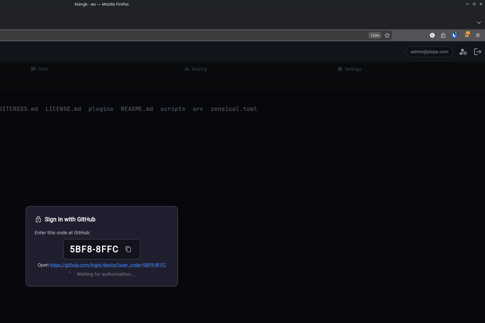

GitHub HTTPS Authentication¶
Klangk workspaces can authenticate with GitHub for HTTPS git operations (push, pull, clone of private repos). Two methods are available:
- Sign in with GitHub (recommended) — OAuth device flow, no token management required. Requires admin configuration.
- Personal access token (PAT) — manual token entry, always available as a fallback.
When git needs credentials, a dialog appears in your browser tab — no need to paste tokens into the terminal.
Setup¶
The git-credential feature must be included in your features list. If
you're using the default feature set, it's already there. Otherwise, add
it to your features.yaml:
Then run update-features to materialize the feature payload, then rebuild
the workspace image (build-workspace-image).
Sign in with GitHub (recommended)¶
When the GitHub OAuth client ID is configured — deploy-wide by the
admin (see Admin setup
below), per workspace, or ad hoc in a shell (see
Ways to set the client ID) — running a
git command that requires authentication for github.com triggers
the device flow automatically.
How it works¶
- Run a git command that requires authentication:
- A popup window opens at GitHub's device authorization page. A dialog in the Klangk tab shows the code with a copy button and a spinner while waiting for authorization.

- Copy the code from the dialog (click the copy icon), paste it into the GitHub page, and authorize the app. The credential helper detects authorization automatically — the dialog dismisses and git proceeds.
The entire device flow runs inside the workspace container. The
container-side credential helper (git-credential-klangk) talks to
GitHub directly, and only sends the display code to the browser for the
user to see. The access token goes straight from GitHub to git via the
helper's stdout — it is never displayed. After a successful
authenticated operation, git calls the helper's store operation,
which places the credential in the browser tab's in-memory cache so
subsequent operations in that tab reuse it without a new login (see
Credential cache for lifetime and scope).
If the device flow fails (network error, expired code, denied), the helper falls back to the PAT dialog automatically.
Scopes¶
The device flow requests the repo scope, which grants read/write
access to repositories you can access on GitHub. The token is scoped to
the OAuth App — it cannot access organization resources unless the
organization has approved the app.
When does the device flow activate?¶
The device flow only activates when all of these are true:
- A provider is configured for the host — a
KLANGKWS_FEATURE_OAUTH_PROVIDERSentry whosehostmatches, or one of the shorthands:KLANGKWS_FEATURE_GITHUB_OAUTH_CLIENT_IDfor GitHub,KLANGKWS_FEATURE_GITLAB_OAUTH_CLIENT_IDfor gitlab.com - The git host matches the provider's
host— any spelling counts: case (GitHub.com), explicit port (github.com:443), a trailing dot (github.com.), and awww.prefix all match - A browser tab is connected (the helper needs to show the code)
For hosts without a configured provider, the helper falls through to the PAT dialog.
Ways to set the client ID¶
KLANGKWS_FEATURE_GITHUB_OAUTH_CLIENT_ID can come from three levels.
Where several apply, the narrower one wins (the per-workspace value is
injected after — and so overrides — the deploy-wide value; a shell
export shadows both for commands run from that shell):
- Deploy-wide (admin). The
features_config:block ofklangkd.yaml(github_oauth_client_id: "Ov23li...") or theKLANGKWS_FEATURE_GITHUB_OAUTH_CLIENT_IDenvironment variable on the server. Injected into every workspace container at start. See Admin setup. - Per workspace. The workspace's environment settings (the
envmap on workspace create/edit, e.g.KLANGKWS_FEATURE_GITHUB_OAUTH_CLIENT_ID=Ov23li...). Useful for testing or when only one workspace should use GitHub OAuth. Takes effect the next time the workspace container starts (restart the workspace after changing it) and survives restarts of that workspace. Stripped on export/import — an imported copy falls back to the deploy-wide value. - Ad hoc, in a shell. Inside the workspace terminal:
Takes effect immediately for git commands run from that shell — no container restart needed — but is gone when the shell or the workspace restarts.
In all three cases the value only needs to be the OAuth App's client ID — no client secret is ever needed (the device flow is designed for public clients).
Using a personal access token¶
If GitHub OAuth is not configured, or for non-GitHub hosts, the credential dialog shows username and PAT fields:
{kind=link}
Generating a GitHub PAT¶
The credential helper needs a fine-grained personal access token with repository access. To create one:
- Go to https://github.com/settings/tokens?type=beta (or navigate to Settings > Developer settings > Personal access tokens > Fine-grained tokens).
- Click Generate new token.
- Give it a descriptive name (e.g. "Klangk workspace").
- Set an expiration. GitHub allows up to 1 year.
- Under Repository access, choose either:
- All repositories — if you want to push/pull from any repo.
- Only select repositories — pick the specific repos you need.
- Under Permissions > Repository permissions, grant:
- Contents: Read and write (required for push/pull).
- Metadata: Read-only (required by GitHub for all fine-grained tokens).
- Click Generate token.
- Copy the token immediately — GitHub will not show it again.
The token starts with github_pat_ (fine-grained) or ghp_ (classic).
Both formats work. Classic tokens also work but fine-grained tokens are
recommended because they can be scoped to specific repositories.
Using the PAT¶
- Open a workspace and run a git command that requires authentication.
- Enter your GitHub username and paste the PAT.
- Click Authenticate.
On subsequent git operations to the same host, the cached credentials are reused automatically — no dialog appears. The cache lasts until you refresh the page or close the tab.
Admin setup: creating a GitHub OAuth App¶
To enable "Sign in with GitHub" for your Klangk instance, you need to create a GitHub OAuth App and set one environment variable.
- Go to GitHub > Settings > Developer settings > OAuth Apps.
- Click New OAuth App (or Register a new application).
- Fill in the form:
- Application name: e.g. "Klangk — My Instance"
- Homepage URL: your Klangk instance URL (e.g.
https://klangk.example.com) - Authorization callback URL: use your instance URL (e.g.
https://klangk.example.com). The device flow does not use redirects, but GitHub requires this field. - Check Enable Device Flow on the registration form.
- Click Register application.
- Copy the Client ID (you do not need the client secret — the device flow is designed for public clients).
- Set the environment variable in your deployment:
- The variable is injected into workspace containers at start —
no image rebuild is needed. Restart existing workspaces (or open a
new one) and the device flow will activate automatically for
github.comhosts.
Important: this must be an OAuth App, not a GitHub App. The device authorization grant is only available on OAuth Apps.
If KLANGKWS_FEATURE_GITHUB_OAUTH_CLIENT_ID is not set, the device flow is
disabled for GitHub and the PAT dialog is used for all hosts.
Other git hosts: GitLab, self-hosted (provider map)¶
The device flow is not GitHub-specific. Any OAuth provider that implements the RFC 8628 device authorization grant works. Today that means GitHub (OAuth Apps) and GitLab 17.1+ — on GitLab the OAuth application must also have the device flow enabled (a per-app setting, off by default on new apps). Gitea has no device flow in any release yet, and Atlassian/Bitbucket offers no public device authorization endpoint; hosts on those services use the PAT dialog.
For gitlab.com there is a shorthand, same as GitHub's: set
and git push to gitlab.com runs the GitLab device flow
(/oauth/authorize_device + /oauth/token, scope
read_repository write_repository, username oauth2). No client secret
needed; do not mark the app confidential.
For self-hosted GitLab or any other RFC 8628 provider, the host is
your own — use the provider map instead.
KLANGKWS_FEATURE_OAUTH_PROVIDERS is a JSON list of provider entries:
KLANGKWS_FEATURE_OAUTH_PROVIDERS='[
{
"host": "gitlab.example.com",
"client_id": "abc123",
"device_code_url": "https://gitlab.example.com/oauth/authorize_device",
"token_url": "https://gitlab.example.com/oauth/token",
"scope": "read_repository write_repository",
"username": "oauth2"
}
]'
Each entry:
host(required) — the git remote's host, bare (nowww.prefix, port, or trailing dot). Matching normalizes the credential host (case, explicit port, trailing dot) and tolerates awww.prefix on it, but never matches by suffix —github.com.evil.comis notgithub.com.client_id(required) — the OAuth application's client ID (public clients need no secret, same as GitHub).device_code_url/token_url(required) — the provider's RFC 8628 endpoints. For GitLab (self-managed or gitlab.com) these arehttps://<host>/oauth/authorize_deviceandhttps://<host>/oauth/token.scope(optional) — requested scope string; omitted from the code request when empty.username(optional) — the git username reported with the token. Defaults tooauth2(the GitLab convention); GitHub's shorthand usesx-access-token.
An entry for github.com or gitlab.com may live in the map too — it
wins over the corresponding shorthand when both are set. The same three
levels apply as for the client IDs (deploy-wide via the server env or
the features_config: block as oauth_providers, per workspace via the
workspace env map, ad hoc via a shell export), and the rest of the
flow — dialog, cache, PAT fallback — behaves identically.
In klangkd.yaml the JSON must arrive as one string. Use a folded block
scalar (no quote escaping — JSON is whitespace-insensitive) or a file:
reference to a JSON file; a native YAML list as the value is rejected at
construction:
features_config:
oauth_providers: >-
[{"host": "gitlab.example.com",
"client_id": "abc123",
"device_code_url": "https://gitlab.example.com/oauth/authorize_device",
"token_url": "https://gitlab.example.com/oauth/token",
"scope": "read_repository write_repository",
"username": "oauth2"}]
The dialog names the provider ("Sign in to gitlab.com"), only https
verification pages are auto-opened in the browser, and the poll loop is
the same RFC 8628 state machine, so any compliant provider works
without further configuration.
Credential cache¶
The PAT cache is per-tab and in-memory only:
- Each browser tab has its own
GitCredentialFeatureinstance with its own cache. Credentials entered in tab A are not available in tab B. - Refreshing the page clears the cache (new feature instance).
- Closing the tab clears the cache.
- The cache is keyed by
protocol://host(e.g.https://github.com).
Device flow tokens reach git directly (the helper writes the token to
its stdout for git, never to the screen). After a successful
authenticated operation (git push, an authenticated pull, …), git
calls the helper's store operation, which caches the credential in
the browser for subsequent operations within the same session — the
same store/erase lifecycle as PATs above.
Multiple browser tabs¶
If you have two browser tabs open on the same workspace, the credential dialog appears in whichever tab you most recently clicked into. Both tabs share the same terminal session, but each maintains its own credential cache. Switching tabs and running git will prompt for credentials again if that tab's cache is empty.
SSH alternative¶
If you prefer SSH authentication over HTTPS, you can configure your git
remotes to use SSH URLs (git@github.com:...) instead. The credential
helper only activates for HTTPS URLs.
Note that there is currently no way to keep your GitHub private key secure in a Klangk instance — any SSH key placed in the container is accessible to anyone with access to the workspace. For this reason, HTTPS with PATs or OAuth is the recommended authentication method.
Troubleshooting¶
Dialog doesn't appear¶
- Make sure the
git-credentialfeature is installed (rungit config --system credential.helperin the container — it should printklangk). - Verify the browser tab has a WebSocket connection (check for errors in the browser console).
Device flow not activating¶
- Verify
KLANGKWS_FEATURE_GITHUB_OAUTH_CLIENT_IDis set in the container environment (check withecho $KLANGKWS_FEATURE_GITHUB_OAUTH_CLIENT_IDin the workspace terminal; empty means the device flow is off). See Ways to set the client ID — the quickest check is an ad-hocexportin the shell. - Check that the OAuth App has Enable Device Flow turned on.
- The device flow only activates for hosts with a configured provider
(GitHub via the client ID, or any host via a
KLANGKWS_FEATURE_OAUTH_PROVIDERSentry — case, explicit port, trailing dot, andwww.prefix all match; see When does the device flow activate?). - Restart the workspace after setting the variable — it is injected at container start, not baked into the image.
Device flow code expired¶
The code is valid for 15 minutes. If it expires before you authorize, the helper falls back to the PAT dialog. Run the git command again to get a new code.
Credentials rejected¶
- Verify your PAT hasn't expired.
- Check that the token has Contents: Read and write permission.
- For fine-grained tokens, verify the target repository is included.
- Try generating a new token.
Debug output¶
Run with debug logging to see the credential helper's activity:
This prints the browser ID, the bridge request/response, device flow status, and any errors to stderr.